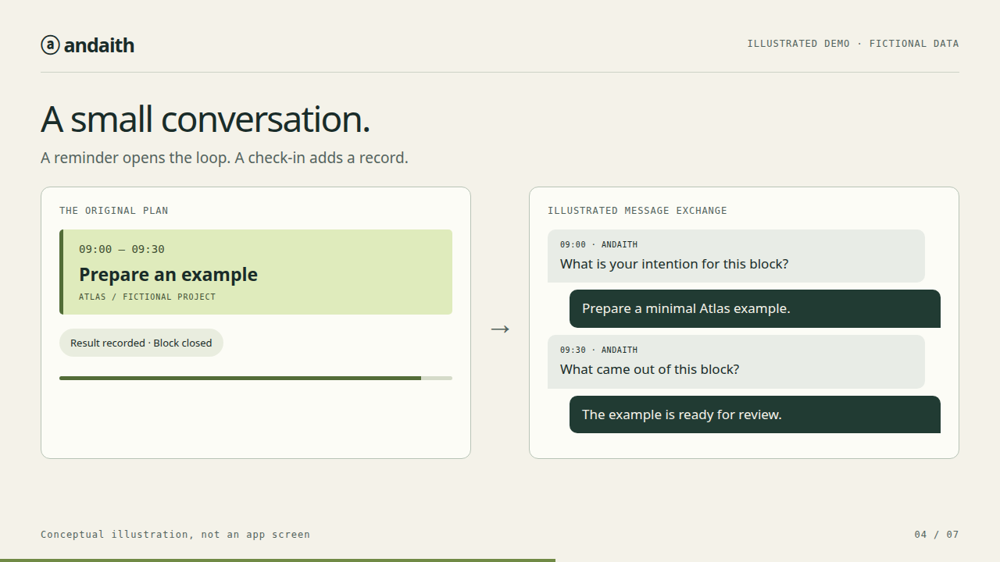
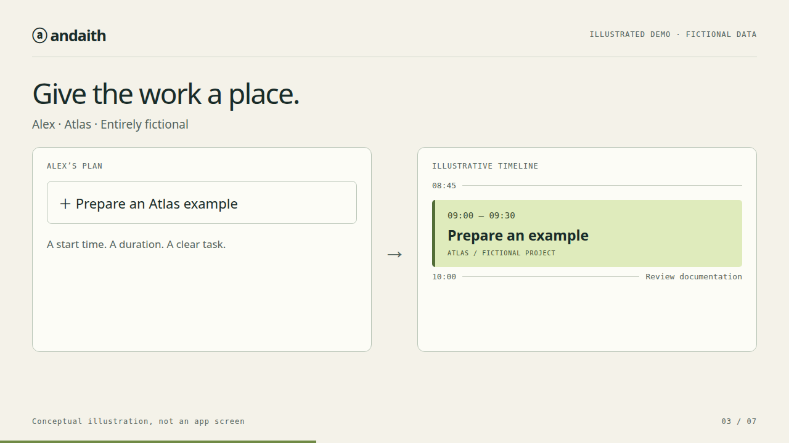
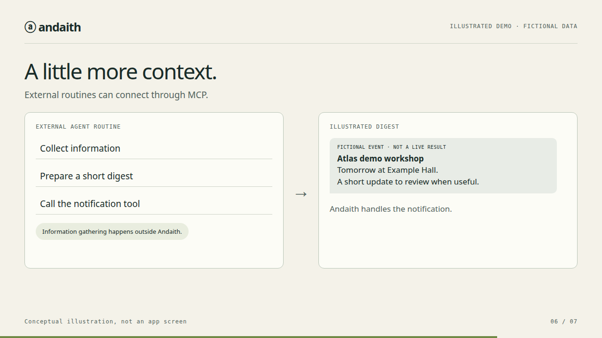

Give the work a place.
Organize a task into a scheduled block with a start time and duration.
A personal scheduler / Built through personal use
Andaith connects planned blocks, Telegram reminders, and check-ins. A small conversation around the work you planned to do.

Illustrated demo with fictional data. These visuals explain the workflow; they are not screenshots of an available web app.
01 / Why I built it
I wanted a clearer connection between what I planned and what I actually recorded.
But asking for more input was not always helpful. Through using Andaith, I started distinguishing moments that need a check-in from moments that only need a reminder.
This began with my own needs. You might recognize the problem—or have a different one worth discussing.
02 / Show & tell
Meet Alex, working on the fictional project Atlas. See a block take its place in the day, a reminder arrive, and a response become a record.
03 / How it works
Organize a task into a scheduled block with a start time and duration.
Receive a reminder in Telegram. Depending on the block, it can simply announce or ask for a check-in.
For a block that asks, reply with an intention and a result. Reported activity is kept separately from the original plan.


No check-in recorded ≠ the activity did not happen.
Andaith records the absence of a response. It does not turn that absence into certainty about what you did.
04 / Still evolving
External agent routines can prepare contextual digests and send them through Andaith. The agent gathers information; Andaith handles the notification.
I’m exploring further integrations while continuing to learn from using the project. There is no announced release date or open-source edition yet.
Curious about the implementation? Engineering & how it was built →
05 / Reach out
Have a similar challenge or an idea? I’d love to hear about it.
Email me ↗adriatico.bace+andaith@gmail.comTell me what you would like to use it for. This starts a conversation about your needs and a possible trial; it is not a signup or a promise of immediate access, installation, or support. Suggestions are welcome too.